Contents
Exercice 1: Rehaussement d'images
close all; clear all; clc;
1.1.
Image originale:
theArtist = imread("theArtist.png");
imshow(theArtist);
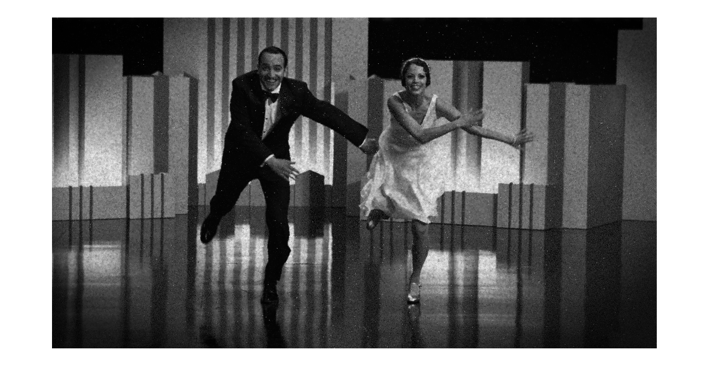 Fonction Egalisation_Histogramme.m:
type Egalisation_Histogramme.m;
function [imageEgalisee] = Egalisation_Histogramme(image)
histogramme = zeros(1,256);
[rows, cols] = size(image);
for row = 1:rows
for col = 1:cols
index = image(row, col) + 1;
histogramme(index) = histogramme(index) + 1;
end
end
histogramme_cumulatif = zeros(1,256);
somme = 0;
for i = 1:256
somme = somme + histogramme(i);
histogramme_cumulatif(i) = somme;
end
imageEgalisee = zeros(rows, cols);
pixels = rows * cols;
for row = 1:rows
for col = 1:cols
index = image(row, col) + 1;
value = histogramme_cumulatif(index);
odds = value/pixels;
newValue = round(255 * odds);
imageEgalisee(row, col) = newValue;
end
end
imageEgalisee = uint8(imageEgalisee);
end
Image avec égalisation:
theArtistEgalisee = Egalisation_Histogramme(theArtist); imshow(theArtistEgalisee);
1.2.
Fonction Convolution.m:
type Convolution.m;
function [imageConvoluee] = Convolution(image, masque)
masque = rot90(masque, 2);
sizeMasque = size(masque);
moitieMasque = floor(sizeMasque(1)/2);
sommeMasque = sum(masque,'all');
image = padarray(image, [floor(sizeMasque(1)/2), floor(sizeMasque(2)/2)], 0, 'both');
[rows, cols] = size(image);
imageConvoluee = zeros(rows, cols);
for row=1+floor(sizeMasque(1)/2):rows-floor(sizeMasque(1)/2)
for col=1+floor(sizeMasque(2)/2):cols-floor(sizeMasque(2)/2)
sousMatrice = image(row-moitieMasque:row+moitieMasque, col-moitieMasque:col+moitieMasque);
sousMatrice = double(sousMatrice);
somme = sum(masque.*sousMatrice, 'all');
imageConvoluee(row, col) = round(somme/sommeMasque);
end
end
imageConvoluee = imageConvoluee(floor(sizeMasque(1)/2)+1:rows-floor(sizeMasque(1)/2),floor(sizeMasque(1)/2)+1:cols-floor(sizeMasque(1)/2));
imageConvoluee = uint8(imageConvoluee);
end
1.3.
masqueGuassien = 1/90 * [1 2 1 2 1; 2 4 8 4 2; 1 8 18 8 1; 2 4 8 4 2; 1 2 1 2 1]; theArtistConvolue = Convolution(theArtistEgalisee, masqueGuassien); imshow(theArtistConvolue);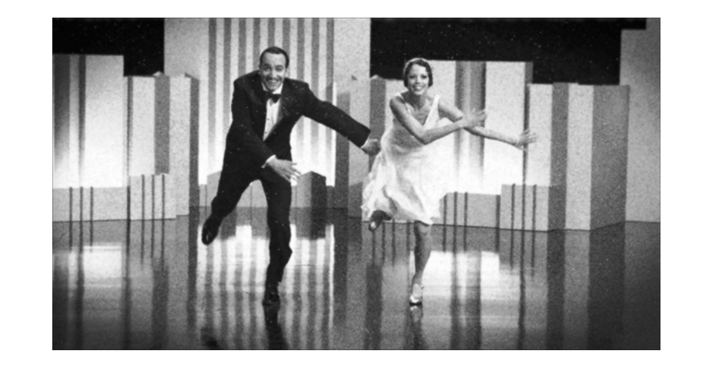
1.4.
Fonction Rehaussement_Contour.m:
type Rehaussement_Contour.m
function [imageRehaussee] = Rehaussement_Contour(image, k)
masqueGaussien = 1/16 * [1 2 1; 2 4 2; 1 2 1];
Ig = Convolution(image, masqueGaussien);
masqueLaplacien = [-1 -1 -1; -1 8 -1; -1 -1 -1];
laplacien = Convolution(Ig, masqueLaplacien);
%imshow(laplacien);
imageRehaussee = Ig + k * laplacien;
% Mettre les valeurs négatives à 0
imageRehaussee(imageRehaussee < 0) = 0;
imageRehaussee = uint8(imageRehaussee);
end
theArtistRehaussee = Rehaussement_Contour(theArtistConvolue, 1/15); imshow(theArtistRehaussee);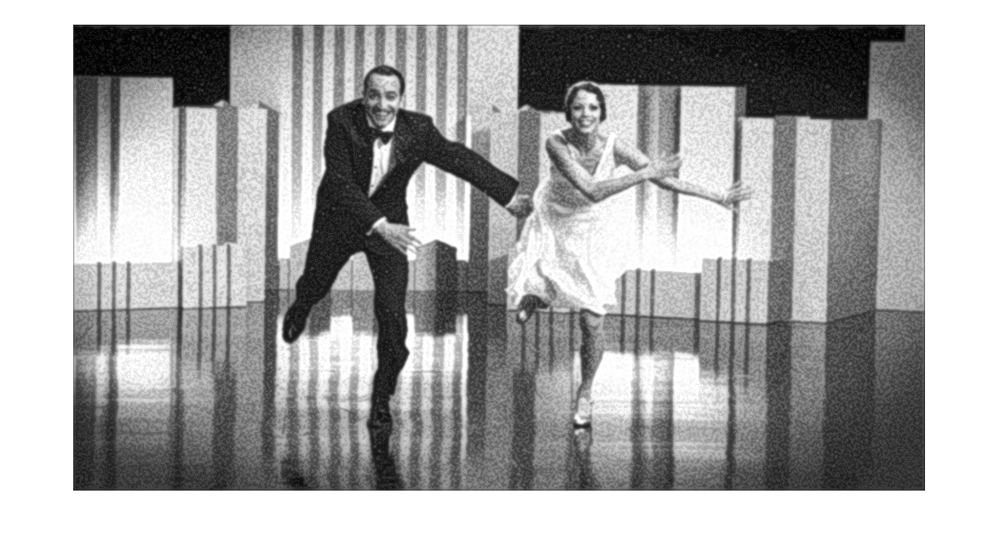
1.5.
% TODO: Revoir % Les contours de l'image rehaussée sont ressortis. Cela est dû au fait que % le filtre Laplacien conserve les contours, soient les transitions de % couleur de pixels. En additionnant les contours, ou dans notre cas une % fraction de ceux-ci, on fait ressortir les contours de l'image originale. % Un filtre médian adaptatif pourrait être utilisé pour enlever le bruit.
Exercice 2: Compteur de monnaie
close all; clear all; clc;
2.1.
pieces = imread("pieces.jpg");
pieces = rgb2gray(pieces);
imshow(pieces);
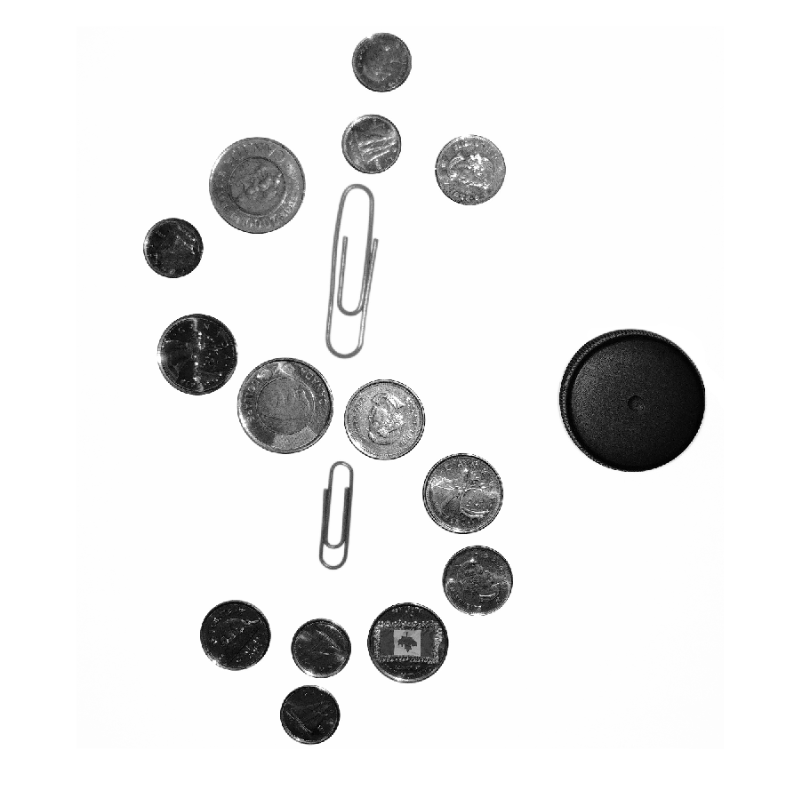 2.2.
Voici le détail de la fonction Binariser.m
type Binariser.m;
function [imageBinarisee] = Binariser(image, seuil)
[rows, cols] = size(image);
imageBinarisee = zeros(rows, cols);
for row = 1:rows
for col = 1:cols
if image(row, col) >= seuil
imageBinarisee(row, col) = 255;
else
imageBinarisee(row, col) = 0;
end
end
end
end
piecesBinarisee = Binariser(pieces, 250); piecesBinarisee(piecesBinarisee==0) = 1 ; piecesBinarisee(piecesBinarisee==255) = 0 ; piecesBinarisee(piecesBinarisee==1) = 255 ; imshow(piecesBinarisee);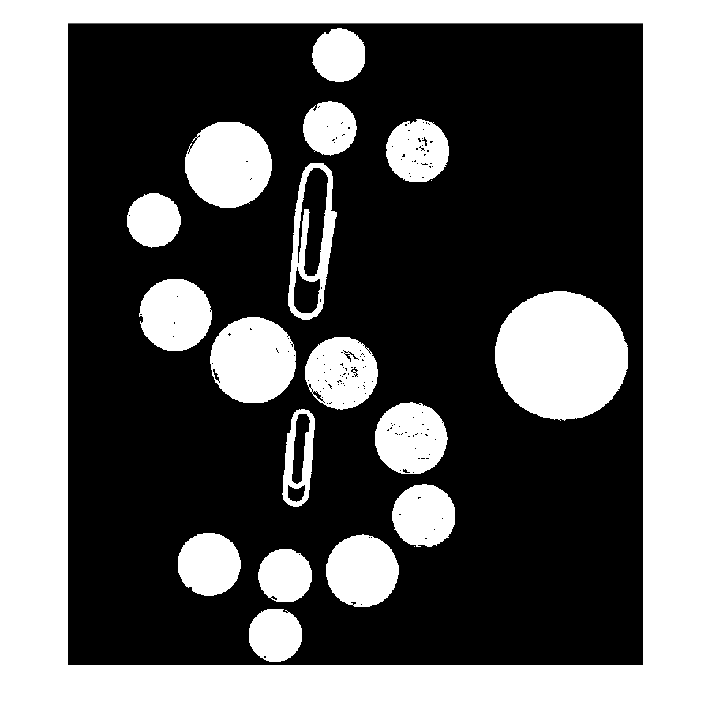
2.3.
elementStructurant = strel('disk', 10, 4);
piecesFermee = imclose(piecesBinarisee, elementStructurant);
imshow(piecesFermee);
2.4.
Voici le détail de la fonction Compter_Monnaie.m
type Compter_Monnaie.m;
function [total] = Compter_Monnaie(image)
nbStructures = 0;
esBouchon= strel('disk', 200, 4);
imageBouchon = imerode(image, esBouchon);
bouchons = bwconncomp(imageBouchon);
nbBouchons = bouchons.NumObjects - nbStructures;
nbStructures = nbStructures + nbBouchons;
es2Dollar = strel('disk', 140, 4);
image2Dollars = imerode(image, es2Dollar);
dollars = bwconncomp(image2Dollars);
nb2Dollars = dollars.NumObjects - nbStructures;
nbStructures = nbStructures + nb2Dollars;
es25Cents = strel('disk', 120, 4);
image25Cents = imerode(image, es25Cents);
vingCincCents = bwconncomp(image25Cents);
nb25Cents = vingCincCents.NumObjects - nbStructures;
nbStructures = nbStructures + nb25Cents;
es5Cents = strel('disk', 110, 4);
image5Cents = imerode(image, es5Cents);
cincCents = bwconncomp(image5Cents);
nb5Cents = cincCents.NumObjects - nbStructures;
nbStructures = nbStructures + nb5Cents;
es10Cents = strel('disk', 90, 4);
image10Cents = imerode(image, es10Cents);
dixCents = bwconncomp(image10Cents);
nb10Cents = dixCents.NumObjects - nbStructures;
nbStructures = nbStructures + nb10Cents;
total = 2 * nb2Dollars + 0.25 * nb25Cents + 0.10 * nb10Cents + 0.05 * nb5Cents;
end
total = Compter_Monnaie(piecesFermee);
Voici le total calculé par la fonction Compter_Monnaie.m en $:
disp(total);
5.6500
Exercice 3: Transformée de Fourier 2D
close all; clear all; clc;
3.1.
verticales = imread("Barres_Verticales.png");
imshow(verticales);
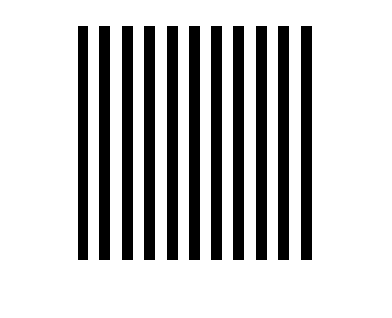 horizontales = imread("Barres_Horizontales.png");
imshow(horizontales);
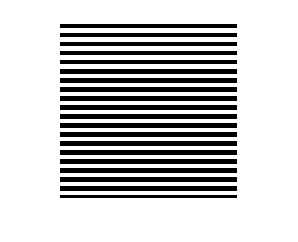 obliques = imread("Barres_Obliques.png");
imshow(obliques);
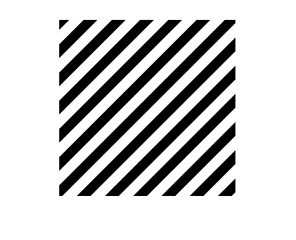 3.2.
Voici le spectre de l'image: Barres_Verticales
fft2_verticales = fft2(verticales); module_verticales = abs(fft2_verticales); module_verticales = module_verticales / length(module_verticales); shift_verticales = fftshift(module_verticales); imshow(log10(1 + shift_verticales), []);

Voici le spectre de l'image: Barres_Horizontales
fft2_horizontales = fft2(horizontales); module_horizontales = abs(fft2_horizontales); module_horizontales = module_horizontales / length(module_horizontales); shift_horizontales = fftshift(module_horizontales); imshow(log10(1 + shift_horizontales), []);
Voici le spectre de l'image: Barres_Obliques
fft2_obliques = fft2(obliques); module_obliques = abs(fft2_obliques); module_obliques = module_obliques / length(module_obliques); shift_obliques = fftshift(module_obliques); imshow(log10(1 + shift_obliques), []);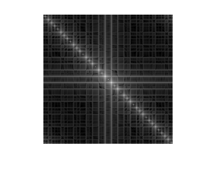
3.3.
verticales = imread("Barres_Verticales.png"); verticales_rotation70 = imrotate(verticales, 70, 'bilinear', 'crop'); imshow(verticales_rotation70)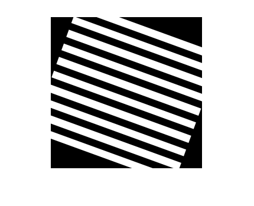
fft2_verticales = fft2(verticales_rotation70); module_verticales = abs(fft2_verticales); module_verticales = module_verticales / length(module_verticales); shift_verticales = fftshift(module_verticales); imshow(log10(1 + shift_verticales), []);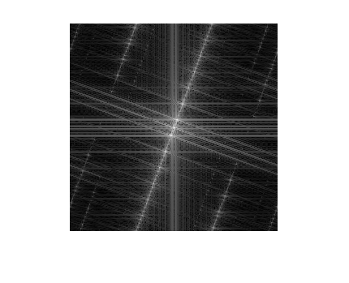
3.4.
% TODO revoir: pas certain des fft2 par rapport à la normalisation % http://www.cs.toronto.edu/~jepson/csc320/notes/linearFilters2.pdf % https://www.eee.hku.hk/~work8501/WWW2008/ho4.pdf % Il est possible d'inférer qu'une transformée de Fourier 2D respecte les % propriétées suivantes: % 1. Symétrie: ? % 2. Rotaton: une rotation d'une image d'un angle ? implique que sa % 3. Shift/Translation? % transformée de Fourier est également tournée d'un même angle.
Exercice 4: Filtrage spectral
close all; clear all; clc;
4.1.
maillot = imread("maillot.png");
fft2_maillot = fft2(maillot);
norm_maillot = fft2_maillot / length(fft2_maillot);
module_maillot = abs(norm_maillot);
shift_maillot = fftshift(module_maillot);
imshow(log10(1 + shift_maillot), []);
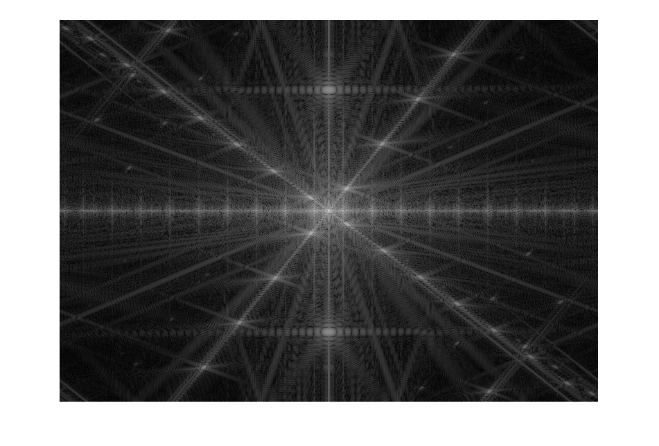 4.2.
% Voici notre réponse textuelle. Voir le schéma ci-dessous pour plus de % détails. % Manche côté gauche (avec moins de lignes): diagonale pente négative principale % Manche côté droit (avec beaucoup de lignes): diagonale pente positive principale % Col: Voir ci-dessous % Pochette: Ligne centrale verticale % Torse: ligne centrale horizontale
spectre_identifie = imread("spectre_identifie.png");
imshow(spectre_identifie);
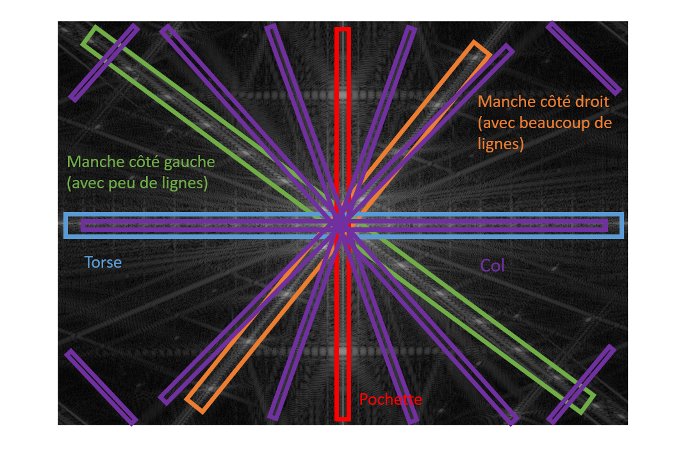 Détail pour l'identification du spectre du col:
% Premièrement, nous avons isolé le col: col = imread("col.png"); col = rgb2gray(col); imshow(col);
Warning: PNG library warning: bKGD: invalid.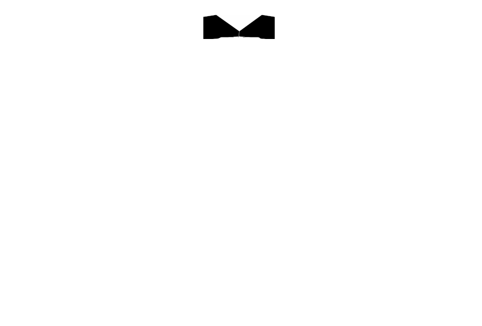
Détail pour l'identification du spectre du col:
% Deuxièmement, nous avons calcul son spectre:
fft2_col = fft2(col);
norm_col = fft2_col / length(fft2_col);
module_col = abs(norm_col);
shift_col = fftshift(module_col);
imshow(log10(1 + shift_col), []);
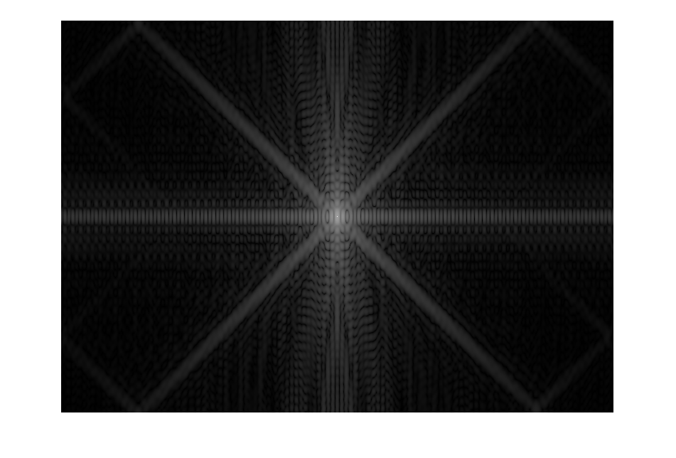 4.3.
maillot = imread("maillot.png"); maillot = double(maillot)/255; H = fspecial('gaussian', size(maillot), 60); H = H./max(H(:)); F = fftshift(fft2(maillot)); low_pass_filtered_maillot = real(ifft2(ifftshift(H.*F))); imshow(low_pass_filtered_maillot);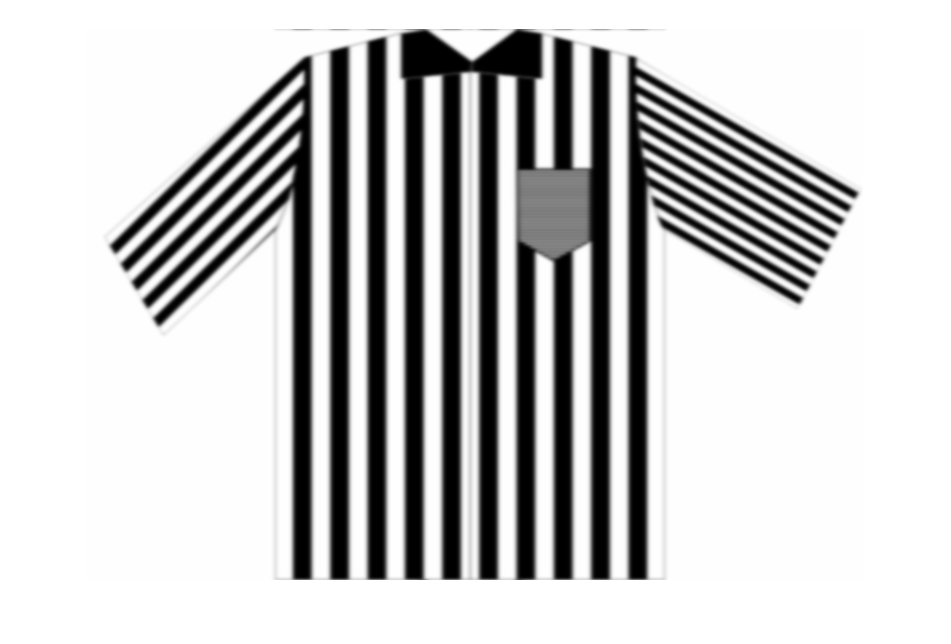
4.4
maillot = imread("maillot.png"); maillot = double(maillot)/255; H = fspecial('gaussian', size(maillot), 60); F = fftshift(fft2(maillot)); H = H./max(H(:)); low_pass_filtered_maillot = real(ifft2(ifftshift(H.*F))); high_pass_filtered_maillot = maillot - low_pass_filtered_maillot; imshow(high_pass_filtered_maillot);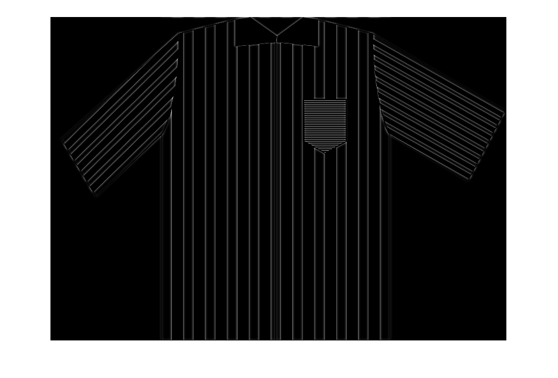
4.5.
maillot = imread("maillot.png"); maillot = double(maillot)/255; H = imread("filter4_5_7.png"); H = rgb2gray(H); H = double(H)/255;
Voici le filtre idéal que avons créé et utilisé pour conserver uniquement la texture des deux manches.
imshow(H);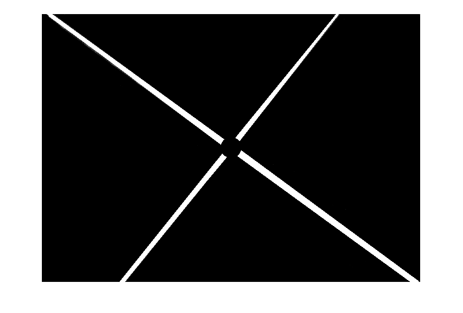
Voici le résultat final:
F = fftshift(fft2(maillot)); low_pass_filtered_maillot = real(ifft2(ifftshift(H.*F))); imshow(low_pass_filtered_maillot);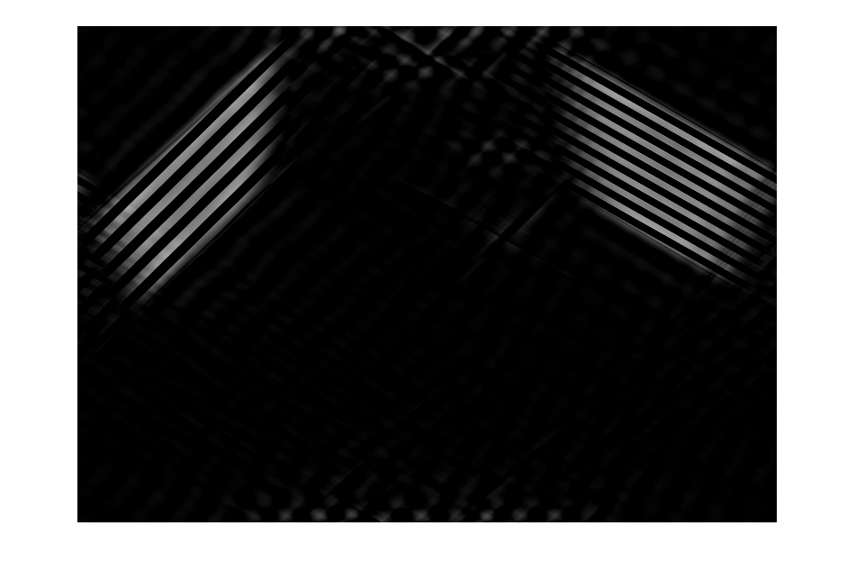
4.6.
maillot = imread("maillot.png"); maillot = double(maillot)/255; H = imread("filter4_6.png"); H = rgb2gray(H); H = double(H)/255;
Voici le filtre idéal que avons créé et utilisé pour faire disparaitre la texture du torse.
imshow(H);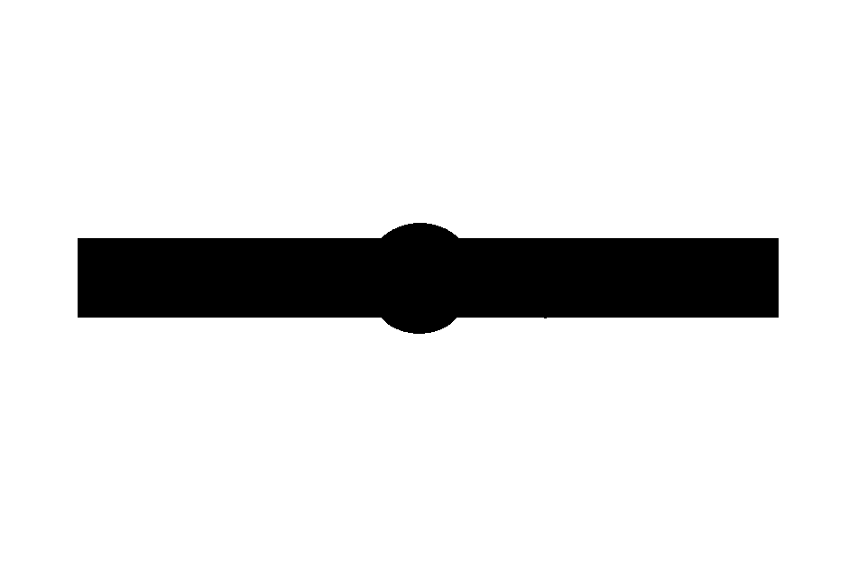
Voici le résultat final:
F = fftshift(fft2(maillot)); low_pass_filtered_maillot = real(ifft2(ifftshift(H.*F))); imshow(low_pass_filtered_maillot);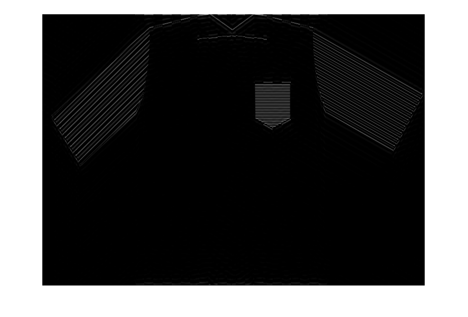
4.7.
% Un filtre idéal est un filtre passe-bas. De plus, % le masque spatial de convolution d'un filtre idéal % contient des ondulations. Lorsqu'on applique un filtre sur une image ces % ondulations causent des cercles d'artefacts sur l'image finale. % Le filtre Butterworth est aussi un filtre passe-bas. Par contre, % les ondulations qui peuvent se trouver dans son masque spatial de % convolution son grandement atténuées puisque la transistion entre le cercle % central blanc et le noir l'entourant est beaucoup plus lisse que dans un % filtre idéal. Cela permet par le même fait de significativement diminuer % le nombre d'artefacts dans l'image finale. Par contre, il est important de % noter que lorsque l'ordre du filtre Butterworth augmente celui-ci se % rapproche d'un filtre idéal et donc il y aura apparition d'artéfacts.
4.8.
% La fréquence 0 correspond à la fréquence moyenne du spectre. En enlevant % cette valeur on se retrouve donc à la soustraire de toutes les autres % fréquences. Cette soustraction correspond à une translation de l'ensemble % du spectre de fréquences vers 0. Il est donc possible d'affirmer que l'image % résultante sera plus "noire" que l'image originale ou égale.
4.9.
% Puisque les composantes du maillot apparaissent en ordre décroissant de % fréquence (alternance entre lignes blanches et noires rapide) nous avons donc % besoin d'un filtre passe haut qui laisse passer de plus en plus de basses % fréquences. % Il est possible de produire ce comportement à l'aide d'un filtre idéal % passe haut avec initialement une grande fréquence de coupure (donc un cercle noir % centré avec un grand rayon). Ensuite, diminuer la fréquence de coupure % petit à petit jusqu'à ce que celle-ci soit 0 et donc aucune fréquence % ne sera coupée ce qui permettra d'obtenir la couleur moyenne de l'image.